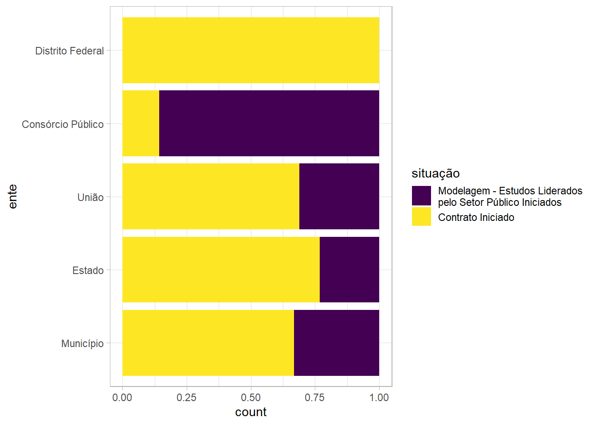

Análises PPP
Algumas análises exploratórias de dados
Começamos a nossa análise identificando as particularidades das diversas variáveis que compõem o banco de dados de PPP que temos disponível. Aqui a ideia é identificar pontos extremos, ausência de valores, associações entre variáveis, distribuição de valores e até mesmo identificação de padrões.
Variáveis com valores ausentes
A identificação de variáveis com valores ausentes é importante para checar a consistência dos dados. Em grande parte das situações a ausência de dados pode significar falhas no processo de coleta ou tabulação dos dados.
empresa atuacao nome nome_link
Length:22057 Length:22057 Length:22057 Length:22057
Class :character Class :character Class :character Class :character
Mode :character Mode :character Mode :character Mode :character
ente_link alerta data_atualizacao
Length:22057 Length:22057 Min. :2019-02-26 13:47:42
Class :character Class :character 1st Qu.:2022-03-09 16:49:09
Mode :character Mode :character Median :2022-11-09 17:45:35
Mean :2022-08-12 14:12:52
3rd Qu.:2023-01-03 13:59:58
Max. :2023-01-31 18:52:50
situacao referencia_numero supersegmento ente
Length:22057 Length:22057 Length:22057 Length:22057
Class :character Class :character Class :character Class :character
Mode :character Mode :character Mode :character Mode :character
criterio_julgamento modalidade_licitacao modalidade_contrato
Length:22057 Length:22057 Length:22057
Class :character Class :character Class :character
Mode :character Mode :character Mode :character
inversao_fases ressarcimento_estudos_reais vedacao_participacao_licitacao
Length:22057 Min. : 2500 Length:22057
Class :character 1st Qu.: 613633 Class :character
Mode :character Median : 1707341 Mode :character
Mean : 4716964
3rd Qu.: 4000000
Max. :86562846
NA's :9798
ressarcimento_estudos_dolares data_encerramento_licitacao informacoes
Min. : 69394 Min. :1994-10-07 00:00:00 Length:22057
1st Qu.: 484000 1st Qu.:2017-04-10 00:00:00 Class :character
Median :1148196 Median :2020-02-26 00:00:00 Mode :character
Mean :1365752 Mean :2018-05-26 09:26:26
3rd Qu.:2000000 3rd Qu.:2021-07-15 00:00:00
Max. :4427000 Max. :2023-01-30 00:00:00
NA's :21864 NA's :11151
valor_contrato atingiu_teto_ressarcimento_reais
Min. :5.000e+00 Length:22057
1st Qu.:7.760e+07 Class :character
Median :3.422e+08 Mode :character
Mean :1.768e+09
3rd Qu.:1.609e+09
Max. :2.442e+11
NA's :8316
atingiu_teto_ressarcimento_dolares
Length:22057
Class :character
Mode :character
Como se vê logo acima algumas colunas que podem ser muito importantes para as análises apresentam valores ausentes, destaques para data_encerramento_licitacao e valor_contrato. É interessante fazer investigações mais aprofundadas para conhecer melhor as regras de negócio associadas e identificar eventuais problemas na consistência da base de dados.
Distribuição dos dados de variáveis quantitativas
O box-plot costuma ser a melhor ferramenta para visualização da distruição dos dados e identificação de valores extremos. Aqui faremos uma análise de cada variável quantitativa, começando com a mais relevantes: valor do contrato.
<Fazer a análise indicando que usa a escala logartimica, informar a quantidade baixa de contratos que registraram ressarcimentos, indicar a quantidade de contratos com pontos abaixo do mínimo do box-plot e ponto extremo superior.>
Agora vamos à distribuição dos valores de resssarcimentos de estudos em Reais
<Fazer a análise indicando que usa a escala logartimica, informar a quantidade baixa de contratos que registraram ressarcimentos, indicar a quantidade de contratos com pontos abaixo do mínimo do box-plot e ponto extremo superior.>
Por fim, a análise de distribuição para a variável que trata de ressacimentos de estudos em dólares.
<Fazer a análise indicando que usa a escala logartimica, informar a quantidade baixa de contratos que registraram ressarcimentos, indicar a quantidade de contratos com pontos abaixo do mínimo do box-plot e ponto extremo superior.>
Tabelas de frequência
Para as variáveis categóricas, ou seja as não numéricas, uma das mais profíquas análises que podem ser feitas é a de tabela de frequência. Nesse caso são indicadas as quantidades de ocorrência de cada classe das variáveis categórias com suas respectivas contribuições percentuais. Vamos observar o que ocorre em cada uma das variáveis mais importates. Começando por atuação.
n % val% %cum val%cum
Licitante 5718 25.9 25.9 25.9 25.9
Autorizada a Realizar Estudos 5305 24.1 24.1 50.0 50.0
Responsável pela Entrega de Estudos 2160 9.8 9.8 59.8 59.8
Contratada para Elaborar Estudos 1833 8.3 8.3 68.1 68.1
Acionista 1679 7.6 7.6 75.7 75.7
Recebedora de Direito de Ressarcimento 1337 6.1 6.1 81.8 81.8
Autora de Representação 1192 5.4 5.4 87.2 87.2
Concessionaria 1115 5.1 5.1 92.2 92.2
Autora de Manifestação de Interesse Privado 788 3.6 3.6 95.8 95.8
Não Autorizada a Realizar Estudos 424 1.9 1.9 97.7 97.7
Entidade Estruturadora 296 1.3 1.3 99.0 99.0
Contratada para Avaliar Estudos 107 0.5 0.5 99.5 99.5
Verificador Independente 57 0.3 0.3 99.8 99.8
Entidades Estruturadoras 42 0.2 0.2 100.0 100.0
Verificadores Independentes 4 0.0 0.0 100.0 100.0
Total 22057 100.0 100.0 100.0 100.0<fazer uma análise das frequências de cada uma das classes>
Um gráfico ajuda a deixar mais evidente a importância das duas classes mais frequentes em relação às demais.
A próxima variável é situação.
n % %cum
Contrato Iniciado 946 31.0 31.0
Paralisado 638 20.9 51.9
Modelagem - Estudos Liderados pelo Setor Público Iniciados 459 15.0 67.0
Cancelado 393 12.9 79.9
Modelagem - PMI Encerrado 150 4.9 84.8
Consulta Pública Encerrada 139 4.6 89.3
Contrato Encerrado 84 2.8 92.1
Licitação Iniciada 62 2.0 94.1
Modelagem - PMI Iniciado 57 1.9 96.0
Licitação Encerrada 47 1.5 97.5
Modelagem - Estudos Liderados pelo Setor Público Encerrados 45 1.5 99.0
Consulta Pública Aberta 22 0.7 99.7
Intenção Pública Anunciada 8 0.3 100.0
Total 3050 100.0 100.0<Analisar a tabela, dando destaque aos três primeiros, e também à soma de paralisado com cancelado>
A opção de visualização em forma de gráfico
E agora vamos fazer a análise por super-segmento.
n % %cum
Infraestrutura Social 1133 37.1 37.1
Saneamento 809 26.5 63.7
Energia e Inovação 586 19.2 82.9
Transportes 522 17.1 100.0
Total 3050 100.0 100.0O gráfico de ranking
Gráficos de ranking
Para os gráficos de ranking começamos com a indicação dos projetos com maiores valores de contratos em execução, sendo apresentados em ordem decrescente por projeto
Aqui vale destacar que ao se fazer análise verificou-se múltiplas contagens para as empresas. Todas as empresas diversas vezes em vários papéis e com os mesmos valores de contrato para cada projeto. Isso pode ser indício de problema na base. Mais uma vez vale a pena investigar as regras de negócios que guiaram a construção da base e também a própria integridade da base.
Associação entre variavéis categóricas
Situação x Supersegmento
top_80pc_situacaoes<-
dados_radar_ppp_trabalho %>%
filter(situacao %in% c("Contrato Iniciado",
"Paralisado",
"Cancelado",
"Modelagem - Estudos Liderados pelo Setor Público Iniciados")) %>%
distinct(nome, situacao, supersegmento)
teste_chi_quadrado<- chisq.test(top_80pc_situacaoes$supersegmento, top_80pc_situacaoes$situacao, simulate.p.value = TRUE)
teste_chi_quadrado$stdres top_80pc_situacaoes$situacao
Cancelado Contrato Iniciado
Energia e Inovação 0.65190525 -9.33102855
Infraestrutura Social 0.09867615 9.43448588
Saneamento -2.02382259 -5.26141461
Transportes 1.57277217 3.81765346
top_80pc_situacaoes$situacao
Modelagem - Estudos Liderados pelo Setor Público Iniciados
Energia e Inovação 8.55617083
Infraestrutura Social -10.36768350
Saneamento 6.01862529
Transportes -2.68977779
top_80pc_situacaoes$situacao
Paralisado
Energia e Inovação 2.18801256
Infraestrutura Social -1.31945485
Saneamento 2.17235156
Transportes -3.15532233Ente x Supersegmento
nomes_segmentos_entes$ente Energia e Inovação Infraestrutura Social Saneamento
Consórcio Público 3.151969 -4.546646 4.988093
Distrito Federal -1.032013 2.839381 -1.334423
Estado -4.516497 2.979090 -5.095842
Município 6.334339 1.751096 7.646346
União -5.539127 -4.238697 -7.748407
nomes_segmentos_entes$ente Transportes
Consórcio Público -3.076100
Distrito Federal -1.047236
Estado 6.538107
Município -17.257194
União 19.739395Ente x Situação
nomes_entes_situacao$situacao
nomes_entes_situacao$ente Contrato Iniciado
Consórcio Público -7.4419332
Distrito Federal 1.5603424
Estado 3.4269399
Município -0.5091439
União 0.4279841
nomes_entes_situacao$situacao
nomes_entes_situacao$ente Modelagem - Estudos Liderados pelo Setor Público Iniciados
Consórcio Público 7.4419332
Distrito Federal -1.5603424
Estado -3.4269399
Município 0.5091439
União -0.4279841
Análise de distribuição multivariada

No gráfico acima percebe-se que apenas os projetos que estão no segmento de Infraestrutura Social apresenta valores para a situação Modelagem - Estudos Liderados pelo Setor Público Iniciados. Isso pode ser mais um indicativo de necessidade de aprofundamento sobre as regras de negócio e identificação de problemas de consistência da base de dados.
Análises de séries temporais
Algumas análises avançadas
Regressão linear
Call:
lm(formula = log(valor_contrato) ~ supersegmento + ente + modalidade_contrato +
criterio_julgamento, data = df_modelo)
Residuals:
Min 1Q Median 3Q Max
-14.9595 -1.1261 0.1558 1.2503 6.6257
Coefficients:
Estimate Std. Error t value
(Intercept) 16.71284 2.19455 7.616
supersegmentoInfraestrutura Social -0.01291 0.24173 -0.053
supersegmentoSaneamento 1.27577 0.23797 5.361
supersegmentoTransportes 2.28025 0.29843 7.641
enteDistrito Federal 1.16470 0.78645 1.481
enteEstado 1.50114 0.65692 2.285
enteMunicípio -0.49978 0.63969 -0.781
enteUnião 1.53831 0.68672 2.240
modalidade_contratoConcessão Comum -2.06684 0.19950 -10.360
modalidade_contratoConcessão de Direito Real de Uso -2.64385 0.69762 -3.790
modalidade_contratoConcessão de Uso -3.08755 0.27139 -11.377
modalidade_contratoConcessão Patrocinada -1.08991 0.38670 -2.818
criterio_julgamentoMaior Lance 2.43562 2.09169 1.164
criterio_julgamentoMelhor Técnica -0.75247 2.12213 -0.355
criterio_julgamentoMenor Preço 2.13381 2.09682 1.018
criterio_julgamentoTécnica e Preço 2.68220 2.09732 1.279
Pr(>|t|)
(Intercept) 5.10e-14 ***
supersegmentoInfraestrutura Social 0.957426
supersegmentoSaneamento 9.82e-08 ***
supersegmentoTransportes 4.23e-14 ***
enteDistrito Federal 0.138862
enteEstado 0.022470 *
enteMunicípio 0.434778
enteUnião 0.025258 *
modalidade_contratoConcessão Comum < 2e-16 ***
modalidade_contratoConcessão de Direito Real de Uso 0.000158 ***
modalidade_contratoConcessão de Uso < 2e-16 ***
modalidade_contratoConcessão Patrocinada 0.004900 **
criterio_julgamentoMaior Lance 0.244470
criterio_julgamentoMelhor Técnica 0.722960
criterio_julgamentoMenor Preço 0.309042
criterio_julgamentoTécnica e Preço 0.201177
---
Signif. codes: 0 '***' 0.001 '**' 0.01 '*' 0.05 '.' 0.1 ' ' 1
Residual standard error: 2.088 on 1269 degrees of freedom
(28 observations deleted due to missingness)
Multiple R-squared: 0.4148, Adjusted R-squared: 0.4079
F-statistic: 59.97 on 15 and 1269 DF, p-value: < 2.2e-16

Análise de clusters para valor de contrato
[1] 0.8681133 0.8712455 0.7935915 0.7723079Árvore de decisão
Pela árvore de decisão, um elemento também imortante é o ente para o segmento de Transportes. No caso, os municípios tendem estar pouco associados ao cluster de contratos de valores elevados que envolvem o setor transportes. A União por sua vez tem uma quantidade de contratos bem mais relevantes para o grupo de contratos de valores elevados do que para o grupo de menores valores quando considerado apenas o segmento de Transportes.